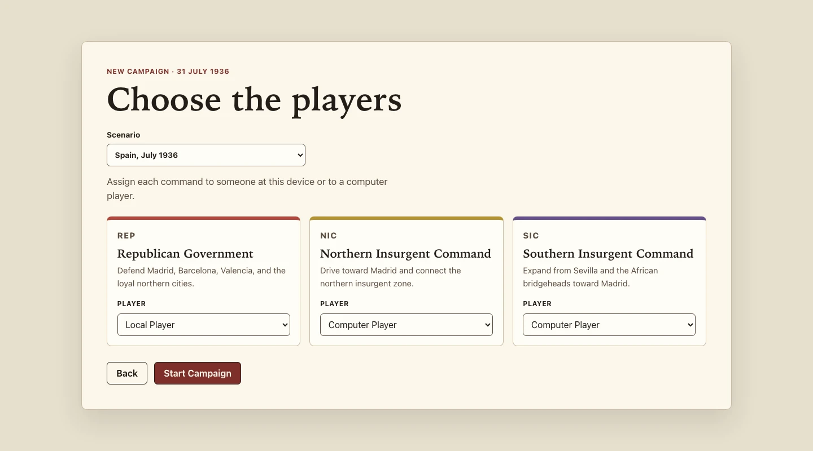

Off is today's behaviour. The countdown shows beside End Turn.
Each local player gets the full time. The clock pauses on the pass-the-device screen; computer players are never timed.
At 00:00 the drafted orders are submitted automatically, exactly as if End Turn had been pressed. Under one minute the chip turns crimson.